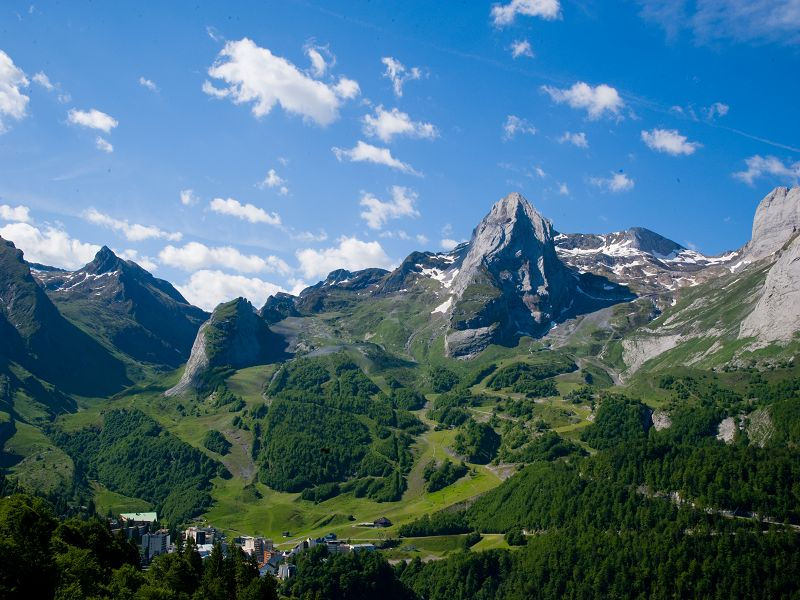
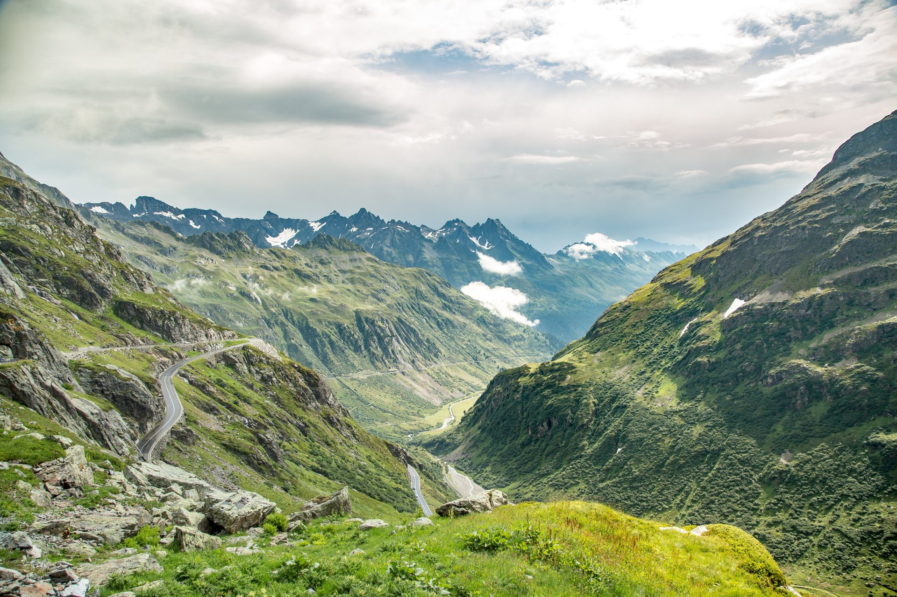
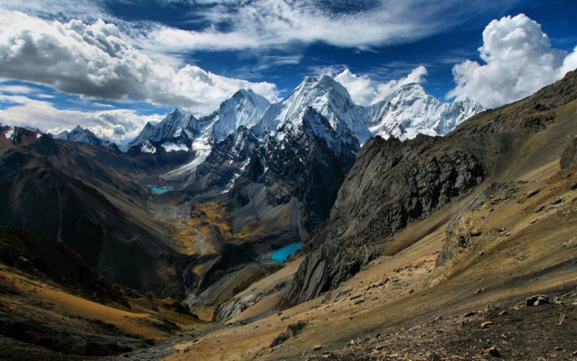
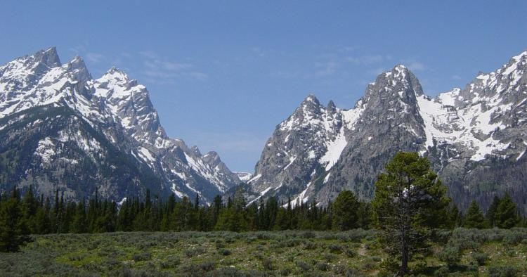

Chaînes Montagneuses Célèbres
|  |
La chaîne des Pyrénées s'étend sur près de 450 kilomètres, elle s’étend du golfe de Gascogne au golfe du Lion ; mais c'est depuis la basse Provence, aux chaînons de la région espagnole de Santander que se développe l'édifice pyrénéen, au sens géologique du terme. Sur plus de 900 kilomètres, on observe en effet ici, schématiquement allongé d'ouest en est, un même faisceau montagneux qui associe des terrains mésozoïques et cénozoïques à des formations anciennes. Ces dernières étaient déjà agencées, au moins depuis l'orogenèse varisque (hercynienne), en un substrat plissé à caractère de croûte continentale. Ce substrat affleure en un certain nombre de massifs « anciens » pyrénéens ; il constitue, de part et d'autre des Pyrénées, le tréfonds de bassins sédimentaires (Aquitaine, Èbre) qui relèvent des cratons européen et ibérique. |
|
Les Alpes constituent une des principales chaînes de montagne d’Europe, identifiée comme telle dès l’époque romaine, puis clairement circonscrite par les naturalistes à partir du XVIIIe siècle. Elles sont dotées de nombreux sommets dépassant les 4 000 mètres d’altitude, source de plusieurs cours d’eau majeurs du continent, soumises à l’influence de climats très différents, elles sont une composante essentielle de la diversité paysagère et biologique de l’Europe. Placées en position centrale, elles ont profondément frappé, au cours des siècles, l’imagination de ceux, militaires et pèlerins, puis touristes, qui ont été amenés à les traverser. |
 |
|  |
La cordillère des Andes étend ses reliefs depuis la bordure de l'océan Pacifique, jusqu’à la mer des Caraïbes et la Terre de Feu sur environ 2,5 millions de kilomètres carrés. Sa une superficie très proche de celle de l’Himalaya, et elle est présente sur les territoires de sept pays (Venezuela, Colombie, Équateur, Pérou, Bolivie, Chili et Argentine). La continuité méridienne de sa barrière de hautes terres (1,1 million de kilomètres carrés à plus de 2 500 mètres d'altitude) est l’une des plus importante au monde ; l'Amazonie, le plus grand bassin hydrographique et la plus grande forêt tropicale du monde ; la plus grande dénivellation de l'écorce terrestre au nord du Chili (14 kilomètres environ entre des sommets proches de 7 000 mètres d'altitude et la fosse d'Atacama de 8 000 mètres de profondeur) en font un accident majeur de la planète et le lieu de très puissantes interactions entre la terre, l'océan et l'atmosphère. |
|
Situées entre les grandes plaines centrales et la chaîne côtière nord-américaine, les montagnes Rocheuses (ou Rocky Mountains) forment une chaîne linéaire d’environ 4 800 kilomètres qui s’étend du nord de la Colombie-Britannique au Canada jusqu’au Nouveau-Mexique aux États-Unis. Elles font partie de la Cordillère nord-américaine dont la formation a débuté il y a à peu près 200 millions d’années. Réputée pour sa beauté dans le monde entier, cette chaîne de montagnes massives, bien qu’elle soit peu peuplée, appartient à l’imaginaire emblématique de l’Amérique du Nord et attire chaque année des millions de touristes dans ses nombreux parcs nationaux. Les Rocheuses offrent aussi un vaste réservoir de richesses naturelles autant hydrographiques que forestières et minières. |
 |
___
Retour à l'Acceuil